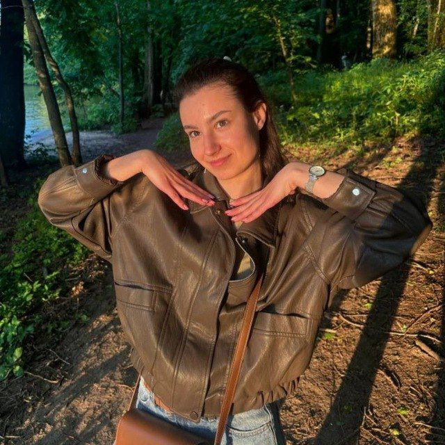

My goal is to become a software engineer (economics). My priorities are to become a good specialist in the sphere of IT. I like learning and appreciate when people strive for knowledge.
I completed my basic education with a special certificate and graduated from school with a gold medal. Now I am a student at the Faculty of Engineering and Economics at the Belarusian State University of Informatics and Radioelectronics.
German B1-B2 – successfully participated in the Republican German language Olympiad 2022/2023 and 2023/2024
English B2
C++
int main() {
setlocale(LC_ALL, "RUS");
SetConsoleOutputCP(1251);
SetConsoleCP(1251);
set_terminate(myTerminateHandler);
try {
int* testMemory = new int[10000000000];
delete[] testMemory;
}
catch (const bad_alloc& e) {
cerr << "Исключение при выделении памяти через new: " << e.what() << endl;
}
try {
cout << "\n=== Демонстрация исключения при создании Jewelry ===\n";
Jewelry brokenJewel("Браслет", 5000, "Золото", -15);
}
catch (const exception& e) {
cerr << "Исключение в конструкторе Jewelry: " << e.what() << endl;
}
while (true) {
try {
Order order;
order.inputOrder();
order.displayOrder();
}
catch (const exception& e) {
cerr << "Не удалось оформить заказ: " << e.what() << endl;
}
string choice;
cout << "\nХотите оформить еще один заказ? (да/нет): ";
getline(cin, choice);
if (choice != "да" && choice != "Да") {
cout << "Выход из программы.\n";
break;
}
}
return 0;
}
learning in rs.school